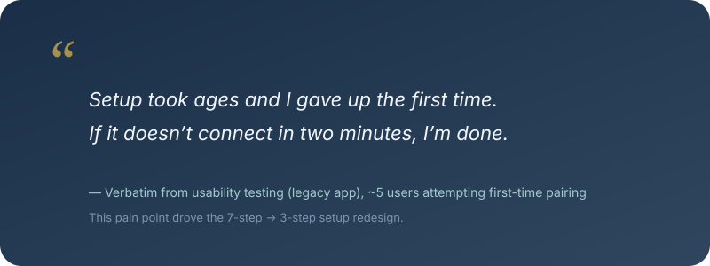
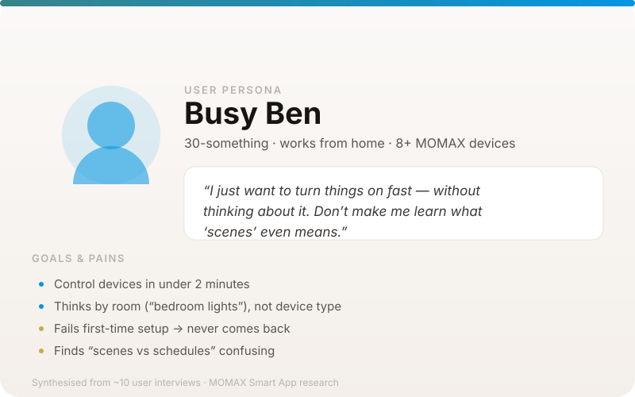
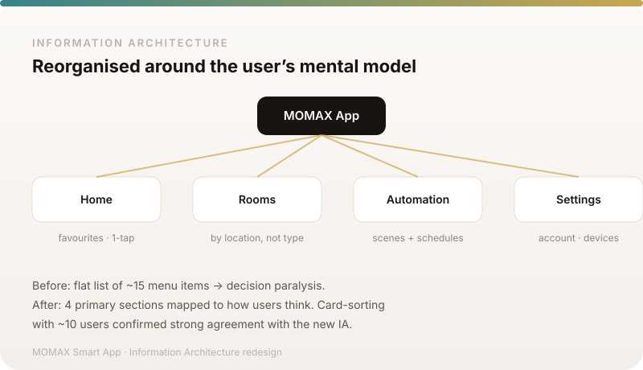

同一批內容（MOMAX · Busy Ben），左：而家 SVG vs 右：HTML 原生 artifact

真實 research 輸出感：便利貼 + 手寫字 + 膠紙，hover 會微微轉正 + 浮起。呢個先係「real artifact」嘅 feel。

似 Figma 嘅 persona 模板：頭像 gradien + quote 側欄 + goals/pains 標籤。純 HTML/CSS，文字永遠清晰，hover 有 depth。

互動樹：4 個 section hover 會浮起 + highlight，badge 標註每個決定（quick / mental model / renamed / consolidated）。
新造 3-4 個 component（PersonaCard / StickyQuote / IATree / JourneySteps），每個 case 用真實內容填 props。最似真實 research 輸出，文字清晰，hover 互動，同 site 風格完全融合。
保留圖檔方式，但重畫 35 張 SVG：加質感（紙紋、陰影、手寫字體、更有設計感嘅 layout）。改動細，但要逐張重畫。
Quote + Persona 用 HTML 卡（最似真 research 輸出嗰兩類），IA/Journey 類保留 SVG 但重畫質感。平衡效果同工作量。